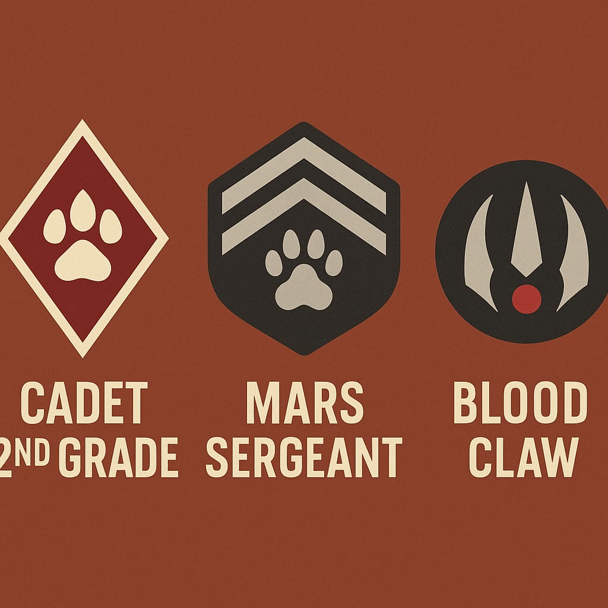
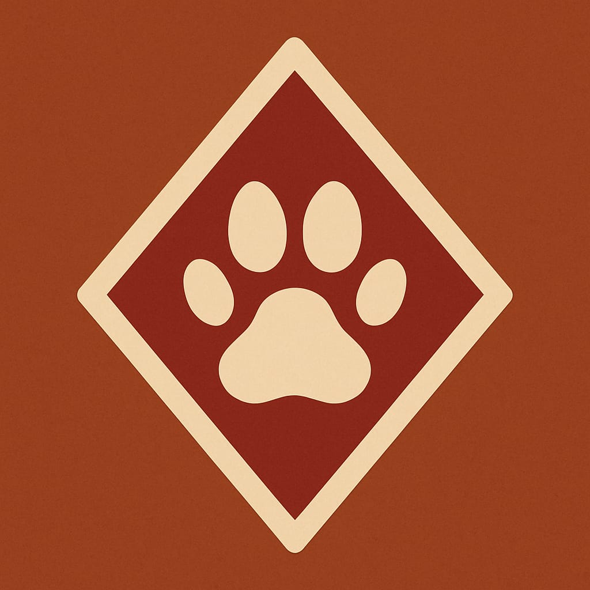

Dienstgradabzeichen der Marskadetten – Klares Rauten-System

K-1 — Kadettanwärter ("Pfotenling")

- Symbolik: Eine einzelne, weisse Katzenpfote ohne weitere Elemente
- Form: Kein Rahmen, keine Raute, nur der Pfotenabdruck mittig
- Farbgebung: Pfote weiss, Hintergrund in Uniformfarbe (rostrot, ockerbraun, etc.)
- Bedeutung: Der erste Schritt. Noch ungeschützt, noch ungeformt – reine Bereitschaft zur Ausbildung.
- Pfote: naturgetreu, weich gerundet, zentral platziert
- Besonderheit: Das einzige Abzeichen ohne geometrische Form
K-2 — Kadett 1. Stufe ("Staubpfote")
- Symbolik: Eine weisse Pfote innerhalb einer weissen Raute
- Form:
- Pfote zentral
- Weisse Raute umgibt die Pfote direkt, enger Rahmen
- Farbgebung: Hintergrund durchgehend Uniformfarbe, Raute und Pfote in Weiss
- Bedeutung: Beginn der Ausbildung – die äussere Struktur formt sich, erste Disziplin
- Pfote: bleibt identisch zu K-1
K-3 — Kadett 2. Stufe ("Schwanzträger")
- Symbolik: Eine weisse Pfote innerhalb zweier ineinander liegender weisser Rauten
- Form:
- Pfote zentral
- Erste Raute: eng um die Pfote (wie bei K-2)
- Zweite Raute: grösser, umgibt die erste mit einheitlichem Abstand (z. B. 1 Pfotenbreite)
- Beide Rauten sind gleichmässig proportioniert
- Farbgebung: Hintergrund bleibt gleich (Uniformfarbe), alle Linien und Pfote in Weiss
- Bedeutung: Schutz durch Struktur und äussere Ordnung – der Kadett beherrscht erste Prinzipien, wird gefestigt
K-4 — Oberkadett ("Krallenpfote")
- Symbolik: Eine weisse Pfote in weisser Raute, umgeben von einer zweiten weissen Raute, aber der Hintergrund zwischen Pfote und äusserer Raute ist vollständig rot eingefärbt
- Form:
- Wie K-3 (zwei Rauten)
- Innenraum (Raute 1 bis Raute 2) ist rot gefüllt
- Farbgebung:
- Pfote und beide Rauten weiss
- Hintergrund ausserhalb der äusseren Raute bleibt Uniformfarbe
- Innenfläche zwischen Pfote und äusserer Raute ist rot
- Bedeutung: Der Kadett ist vollständig geformt, bereit zum Übergang in regulären Dienst. Die rote Fläche symbolisiert Verantwortung und Einsatzbereitschaft
🔁 Einheitliche Merkmale:
- Alle Pfoten identisch gross und zentral platzier
- Alle Abzeichen auf durchgehendem Hintergrund in Uniformfarbe
- Geometrische Abgrenzung ausschliesslich über 0–2 Rauten und farbliche Fläche